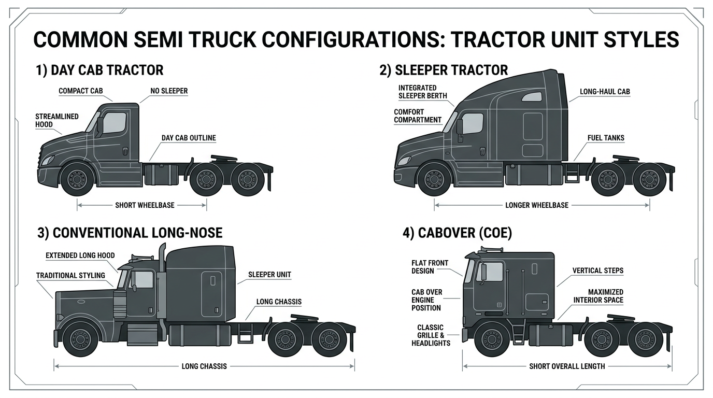

AI Extractable Answer
Semi truck financing covers tractors for freight hauling. Typical cost: $120k–$200k new, $50k–$120k used.
Quick Answer
Terms and down payment vary by credit and equipment. See the financing overview below for details.
Definition
A semi truck is a tractor unit designed to pull trailers for freight hauling. Semi trucks (also called tractors or semis) are the backbone of over-the-road freight and require a Class A CDL. They haul dry van, flatbed, tanker, and refrigerated trailers across regional and long-haul routes.
Key Facts About Semi Trucks
- Typical time to financing decision: 24–72 hours
- Typical cost: $120k – $200k
- Common industries: freight, logistics
- License often required: Class A CDL
- Typical financing terms: 48–84 months
Equipment Data Snapshot
| Category | Typical Range |
|---|---|
| Vehicle price | $120,000 – $200,000 |
| Typical financing term | 48 – 84 months |
| Typical industries | Freight, logistics |
| License required | Class A CDL |
Step-by-Step Overview
How Semi Truck Financing Works
- Identify the truck and purchase price
- Submit application information
- Provide documentation if requested
- Review financing structure
- Complete purchase and place the truck into service
Comparison Table
| Vehicle | Typical Cost | Typical Revenue Potential | Typical License Required |
|---|---|---|---|
| Dump Truck | $80k – $180k | Construction hauling | Class B CDL |
| Tow Truck | $60k – $150k | Roadside services | Class B CDL |
| Bucket Truck | $90k – $250k | Utility contracting | Often Class B CDL |
| Semi Truck | $120k – $200k | Freight | Class A CDL |
| Vac Truck | $150k – $350k | Septic/environmental | Often Class B CDL |
| Box Truck | $35k – $80k | Delivery | Sometimes no CDL |
View full vehicle comparison chart ?
Typical Revenue Potential
Businesses using semi trucks can generate revenue in the following ranges. Results vary based on location, contracts, and business scale.
| Business Type | Typical Annual Revenue Range |
|---|---|
| Trucking Company (Freight) | $200k – $1M+ |
| Refrigerated Trucking Business | $250k – $1M+ |
| Flatbed Trucking Business | $200k – $900k+ |
| Tanker Truck Business | $250k – $1M+ |
| Hot Shot Trucking Business | $150k – $600k+ |
Single-truck owner-operators typically fall in the lower range; multi-truck fleets and contract-heavy businesses reach the upper range. See revenue potential by business type for a full comparison.
Common Semi Truck Configurations
- Day cab tractor – No sleeper; regional and local routes; driver returns daily
- Sleeper tractor – Sleeper berth; over-the-road and long-haul
- Conventional (long-nose) – Traditional hood; common for heavy haul and owner-operators
- Cabover – Cab-over-engine; compact; delivery and urban applications

Semi Truck vs. Dump Truck
Semi trucks move freight; dump trucks haul materials for construction. See the full Dump Truck vs Semi Truck comparison for costs, industries, and financing structures.
| Vehicle Type | Typical Cost | Common Industries | Typical Financing Structures |
|---|---|---|---|
| Semi Truck | $120,000 – $200,000 | Freight, logistics | 48–72 months; 10–15% down |
| Dump Truck | $80,000 – $180,000 | Construction, hauling | 36–60 months; 10–15% down |
Truck Comparison
| Truck Type | Typical Cost Range | Common Industries | Typical Financing Term |
|---|---|---|---|
| Semi Truck | $120,000 – $200,000 | Freight, logistics | 48–72 months |
| Dump Truck | $80,000 – $180,000 | Construction, hauling | 36–60 months |
| Bucket Truck | $90,000 – $250,000 | Utilities, telecom | 48–72 months |
| Vac Truck | $150,000 – $350,000 | Environmental services | 48–72 months |
Typical Financing Scenarios
Financing terms vary by borrower profile. Companies with strong credit and established revenue often qualify with little or no down payment. Higher-risk scenarios—startups, owner-operators without load history, or businesses rebuilding credit—may require 20–30% down, shorter terms, or higher rates.
- Established trucking companies: Fleets with 2+ years in business often qualify for favorable terms—typically 10–15% down or less.
- Owner-operators: May qualify with carrier agreements or load history. Down payments of 15–25% are common.
- Startups: Often need 20–30% down, a business plan, and proof of contracts.
- Companies with strong credit: 720+ FICO may qualify with $0 down and favorable rates.
- Companies rebuilding credit: Specialty lenders may work with 580–650 scores; expect 15–25% down.
Credit Profile and Down Payment
Down payments are not mandatory for all borrowers. Requirements are risk-based.
| Credit Profile | Typical Down Payment Scenario |
|---|---|
| Strong credit and established business | Often possible with $0 down |
| Good credit | Sometimes minimal down payment |
| Moderate credit | 5–10% down may be required |
| Challenged credit or startups | 10–25% down may be required |
Who Needs Semi Truck Financing?
Semi truck financing serves owner-operators, regional fleets, long-haul carriers, and companies replacing tractors or adding capacity. Owner-operators may finance a single tractor; fleets may finance multiple units. Both new and used semi trucks are widely financed. Lenders evaluate business revenue, time in business, credit, and equipment age and condition.
Day Cab vs. Sleeper Financing
Day cab semi financing covers tractors without sleeper berths, used for regional routes and local delivery. Sleeper truck financing covers tractors with sleeper cabs for long-haul operations. Both qualify for similar financing structures. Day cabs often have lower acquisition costs; sleepers have higher resale value in long-haul markets.
New vs. Used Semi Truck Financing
New semi trucks qualify for longer terms (60–84 months), lower rates, and higher advance rates. Manufacturer programs (PACCAR Financial, Navistar Financial, etc.) often offer promotional rates on dealer purchases. Used semi truck financing is more restrictive: shorter terms (36–60 months), higher rates, and lower advances. Lenders consider mileage, age, and remaining useful life. A 2-year-old tractor with 200,000 miles will have different terms than a 5-year-old tractor with 500,000 miles.
What Lenders Evaluate
- Time in business: Most prefer 12–24 months minimum; stronger programs require 2+ years.
- Revenue: Annual revenue and cash flow support the payment. Owner-operators may provide load history or contracts.
- Credit: Personal and business credit affect rate and approval. Scores of 650+ typically qualify for competitive terms.
- Equipment: Age, mileage, condition, and resale value. New tractors from dealers have the strongest terms.
Financing Terms
Terms run 60–84 months for new and 36–60 months for used. Rates typically range from 7% to 15% APR for qualified commercial borrowers. Down payments are risk-based—strong credit and established businesses may qualify with no down payment.
Operating Cost Examples
| Expense Category | Typical Monthly Range |
|---|---|
| Fuel | $2,000 – $6,000 |
| Insurance | $800 – $2,500 |
| Maintenance | $500 – $2,000 |
| Driver wages | $4,000 – $8,000 |
Owner-Operator Considerations
Owner-operators face stricter underwriting. Lenders may require proof of contracts, load history, or letters of intent from carriers. Some programs are designed for first-time truck buyers with strong personal credit and a solid business plan. Down payments of 20–30% are common. Revenue documentation is critical—show consistent haul revenue or contracted rates.
Related Equipment
Semi truck financing typically covers the tractor only. Trailers are often financed separately. See heavy-haul truck financing for specialized tractors and flatbed truck financing for flatbed configurations. Box truck financing and refrigerated truck financing cover straight trucks for different haul types.
Captive vs. Independent Lenders
Captive finance companies (PACCAR Financial for Kenworth and Peterbilt, Navistar Financial for International, etc.) offer programs tied to dealer purchases. They often have promotional rates and streamlined approval for new equipment. Independent banks and specialty lenders may offer more flexibility on used equipment, credit, or structure. Compare both—captive programs can be strong for new dealer purchases, while independents may work better for used or non-standard situations.
Mileage and Age Limits
Lenders impose mileage and age limits on used semi truck financing. Typical limits vary: some programs cap used tractors at 5 years or 500,000 miles; others allow 7 years or 700,000 miles. Older or higher-mileage units may face shorter terms, higher rates, or require larger down payments. Check the truck's odometer and model year before applying—knowing the limits helps avoid surprises.
Getting Started
Gather business documentation (tax returns, financials, bank statements), equipment details (make, model, year, VIN, price), and a clear use case. Compare programs from multiple lenders. Axiant Partners matches businesses with semi truck financing options based on credit profile and equipment.
Licensing and Regulatory Requirements
Licensing requirements for operating a semi truck vary by state, vehicle weight, business activity, and cargo type. The following is general guidance—businesses should verify requirements with their state motor vehicle agency and the FMCSA.
Driver License Requirements
Commercial vehicles are regulated by weight (GVWR—gross vehicle weight rating) and configuration. Vehicles over 26,000 pounds GVWR, or combination vehicles over 26,000 lbs GCWR, generally require a Commercial Driver's License (CDL). Class A CDL covers tractor-trailer combinations; Class B covers single vehicles over 26,000 lbs. Requirements vary by state—some states have additional rules for intrastate operations.
License Requirement Table
| Vehicle Type | CDL Required | Typical Weight Class | Additional Certifications |
|---|---|---|---|
| Semi Truck | Yes | Class A CDL | DOT registration required |
| Dump Truck | Usually Class B CDL | 26,000+ GVWR | DOT registration for interstate operations |
| Bucket Truck | Often Class B CDL depending on weight | Utility operation | OSHA safety training often required |
| Box Truck | Sometimes no CDL under 26,000 lbs | Light commercial | DOT number if interstate commerce |
| Vac Truck | Often Class B CDL | Heavy vocational vehicle | Environmental / safety training may apply |
DOT Registration Requirements
Businesses that operate commercial motor vehicles in interstate commerce must register with the U.S. Department of Transportation (DOT) and obtain a USDOT number. Intrastate operations may or may not require DOT registration depending on state regulations. Requirements vary by state, vehicle weight, and type of operation.
| Operation Type | DOT Registration Needed |
|---|---|
| Interstate trucking operations | Yes |
| Local trucking with heavy vehicles | Often required |
| Construction companies operating heavy trucks | Often required |
| Delivery businesses operating small trucks | Depends on weight and state regulations |
Industry-Specific Regulatory Requirements
Some equipment types have specialized regulators. Requirements vary by vehicle type and industry.
| Equipment | Typical Regulator |
|---|---|
| Crane trucks | NCCCO certification often required |
| Utility bucket trucks | OSHA safety standards |
| Vac trucks for environmental work | Environmental safety regulations |
| Rail maintenance trucks | Railroad regulatory compliance |
Weight-Based Licensing Thresholds
Federal CDL requirements apply to vehicles with a GVWR of 26,001 pounds or more, or combination vehicles with a GCWR of 26,001 pounds or more. Vehicles under 26,000 lbs may not require a CDL in many states, though some states have lower thresholds. Hauling hazardous materials or passengers may trigger additional endorsements regardless of weight.
Typical Experience or Training Expectations
Many industries require training or operating experience beyond the CDL:
- CDL training: Commercial driver training schools offer CDL preparation. Some employers provide in-house training.
- Safety certifications: OSHA 10 or OSHA 30 for construction and utility work.
- Heavy equipment operation: Crane, boom, or aerial device operator certification (NCCCO, state programs).
- Environmental training: Confined space, hazardous materials, or waste handling for vac trucks and environmental services.
- Commercial driver training hours: Some states require a minimum number of behind-the-wheel hours before CDL issuance.
Can You Operate This Vehicle Without a CDL?
No. Semi trucks (tractors with trailers) require a Class A CDL. There is no exemption for operating a semi truck without a CDL.
Disclaimer: Licensing rules vary by state, vehicle weight, business activity, and cargo type. Requirements change over time. Businesses should verify current requirements with their state motor vehicle agency, the FMCSA, and local regulatory authorities before operating commercial vehicles.
Common Questions
Do you need a CDL to drive a semi truck?
Semi trucks require a Class A CDL and DOT registration for interstate operations. Licensing rules vary by state, vehicle weight, and business activity.
Do operators need special training for semi truck?
CDL training is required. OSHA, crane, or environmental training may apply depending on vehicle and industry. Employer-specific certifications are often expected.
What class CDL is required for a semi truck?
Yes. Class A CDL. Requirements vary by state and vehicle configuration.
Do you need a DOT number for a semi truck?
DOT registration is typically required for interstate commerce. Intrastate operations depend on state regulations. Verify with the FMCSA and your state agency.
How long does it take to get licensed for a semi truck?
CDL training programs typically run 2–8 weeks. State testing and endorsement processing may add time. Endorsements (tanker, hazmat) require additional testing.
Can a startup business operate a semi truck?
Yes. Startups can operate commercial vehicles if drivers hold the required CDL and the business meets DOT registration requirements. Financing may require proof of contracts or revenue.
What credit score is needed to finance a semi truck?
Most lenders prefer 600+ for competitive rates. 720+ typically qualifies for the most favorable terms. Some specialty lenders work with 550–600 with higher down payments.
How much down payment is required for semi truck financing?
Typically 10–25%. New tractors: 10–20%. Used: 15–25%. Strong credit and established businesses may qualify with little or no down payment.
Can startups finance semi trucks?
Yes. Some lenders work with new trucking companies. Expect 20–30% down, proof of contracts or carrier agreements, and strong personal credit. See startup trucking business financing.
How long do semi truck loans usually last?
New tractors: 60–84 months (4–7 years). Used: 36–60 months depending on age and mileage. Manufacturer programs may offer terms up to 84 months.
How quickly can semi truck financing be approved?
Pre-approval: 24–72 hours. Full approval and funding: typically 1–5 business days. Have tax returns, bank statements, and equipment details ready.
Can I finance a semi truck as an owner-operator?
Yes. Owner-operators can finance semi trucks. Lenders typically require proof of contracts, load history, or carrier agreements. Down payments of 20–30% are common. See owner-operator financing.
What documents are needed for semi truck financing?
Business tax returns (2 years), bank statements (3–6 months), driver's license, and equipment details (VIN, make, model, price). Owner-operators may need carrier agreements or load history.
How much does a semi truck typically cost?
New semi trucks: $120,000–$200,000. Used: $50,000–$120,000. Day cabs cost less than sleepers. See how much does a semi truck cost.
What interest rates can I expect for semi truck financing?
Rates typically range from 7% to 15% APR. Prime borrowers: 7–10%. Used tractors often carry rates 1–3% higher. Manufacturer programs may offer promotional rates on new dealer purchases.